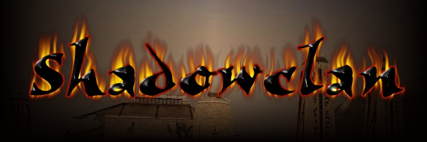

|
 |  |
|||
| Shadowbane Beta Goals |
Shadowclan Message Boards |
Guild Structure |
Joining and Character Creation |
History | Irekei Language |
Ways of the Clan |
Contact Webmaster |
| Goals for the Beta Test: Every member of Shadowclan in the beta test for Shadowbane is expected to find and report any and all bugs/problems/gameplay issues to Wolfpack. In addition, there are many questions that need answering as far as this branch of the Clan is concerned. Beta testers will also be expected to help test and discuss any issues that might affect how this branch is set up so that we can solidify our plans for Shadowbane. |
||
|
Questions to Answer in Beta: Guild type(s) best suited for Shadowclan, how versatile is the Virakt guild-type and will we need sub guilds? |
||
|
Game Goals: ‡ Test basic Game Mechanics |
||
|
Clan Goals: ‡ Discover any disadvantages/advantages to having an Irekei-only guild |
||
Disclaimer: Many of the ideas here have been adapted and plagiarized from all of those who posted comments/suggestions/ideas on Shadowclan's Shadowbane Discussion Board. I'm too lazy to acknowledge all of the individual contributions, but I do want everyone to know that this proposal could not have come about if it weren't for all the great info and input the whole Clan has contributed. Hoowah Shadowclan! | ||
|
Another Disclaimer: This site is under construction and none of these proposals are written in stone. The rules, structure and guidelines for Shadowclan in Shadowbane will not be set until the game is released. | ||